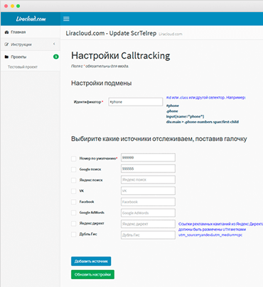
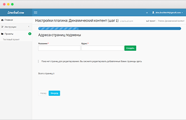

LiraCloud
Облачный сервис, который способствует повышению конверсии сайта и упрощению аналитики.

Описание
LiraCloud — Облачный сервис, который способствует повышению конверсии сайта и упрощению аналитики. Включает в себя 2 составляющие: функционал статического call-tracking и функционал динамической подмены конетента. Цель проекта: Разработка системы и выход с данным облачным продуктом на рынок.
Клиент
Предварительный просмотр

-
Статический CallTrackingУниверсальность отображения содержимого веб-сайта для различных устройствах
-
Динамический контентУниверсальность отображения содержимого веб-сайта для различных устройствах
-
Google AnalyticsИнтеграция Сайт-СRM-GoogleAnalitics
-
Единый код вставкиУниверсальность отображения содержимого веб-сайта для различных устройствах

Статический CallTracking
При классическом отслеживании звонков (в зависимости от источника) каждый номер телефона закрепляется за конкретным источником перехода (канал, тип трафика, кампания, ключевой запрос или их комбинация). Классическое отслеживание номеров требует для каждого отслеживаемого канала рекламы выделение своего отдельного номера телефона, что делает крайне дорогостоящим отслеживание до уровня ключевых запросов, в результате чего в большинстве случаев приходится довольствоваться анализом на уровне источников трафика. Соответственно, отслеживание по источнику не дает углубленных данных для анализа. Отслеживание по источнику подходит интернет-магазинам с небольшим оборотом и небольшим рекламным бюджетом, у которых нет необходимости в глубинном анализе получаемых данных.
Интеграция с Google Analytics
Google Analytics работает на основе мощной и простой платформы составления отчетов, поэтому выбрать нужные данные и настройки просмотра можно всего за несколько кликов. Отчеты о содержании помогут понять, какие страницы и разделы сайта наиболее эффективны и популярны у пользователей, что позволит вам улучшить его интерфейс. Google Analytics позволяет анализировать влияние мобильных технологий на ваш бизнес. Если вы разрабатываете мобильные приложения, вы можете воспользоваться SDK для iOS и Android, чтобы получать данные об их использовании.
Динамический контент
Динамический контент, в отличие от статического, представляет собой изменяющуюся информацию на странице сайта. Основу в таком случае составляет шаблон, который определяет расположение всех компонентов страницы в окне браузера и позволяет добавлять информацию обычными способами. Одним из популярных решений для динамического контента является возможность добавлять комментарии или отзывы. В зависимости от настроек комментировать может зарегистрированный или любой посетитель. Как правило, для этого предусмотрена специальная форма внизу страницы, куда и вписывается информация. Удобным и полезным для пользователя вариантом динамического контента будет подборка ссылок на статьи с аналогичной тематикой. То есть, допустим, посетитель нашел на сайте текст о золотых рыбках, а внизу видит «читайте также Как исполнить три желания». Таким образом, динамический контент обеспечивает большую функциональность сайта, вызывает интерес пользователя, дает возможность индивидуализировать страницы зарегистрированным посетителям, позволяя им подстраивать под себя многие параметры.
